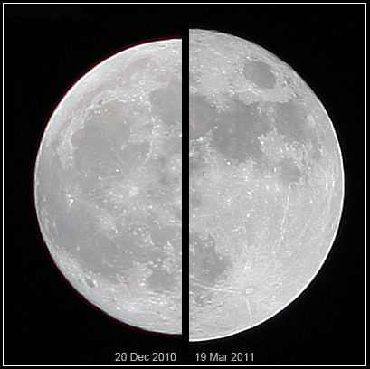

A supermoon is a full Moon that occurs when the Moon is at or near perigee, the closest point in its elliptical orbit around Earth. The result is a Moon that looks slightly larger and brighter than usual. The term has no official astronomical definition and was coined in 1979 by American astrologer Richard Nolle in Dell Horoscope magazine. Astronomers prefer the more precise label perigee-syzygy, where syzygy describes the alignment of Sun, Earth and Moon that defines a full (or new) Moon phase.

Marco Langbroek, CC BY-SA 3.0
{kind=link}
How big is the difference?
The Moon's distance from Earth varies between about 356,400 km at its closest perigee and 406,700 km at its farthest apogee. When a full Moon falls near perigee, it can appear up to 14% wider and 30% brighter than a full Moon at apogee. Compared with an average full Moon, though, the difference is smaller: roughly 7–8% in diameter and about 16% in brightness. In practice this is hard to notice without a side-by-side photograph. The so-called Moon illusion, in which the Moon looks bigger near the horizon, is a separate perceptual effect unrelated to orbital distance.
Frequency and definitions
Supermoons occur three to four times a year and often come in consecutive runs. This happens because the anomalistic month (the time for the Moon to return to perigee, about 27.55 days) is close to the synodic month (the full-Moon-to-full-Moon cycle, about 29.53 days), so perigee and full phase drift in and out of alignment gradually. There is no single agreed threshold for what counts as a supermoon. Nolle's original definition included any full or new Moon within 90% of its closest perigee for that orbit. Other sources, such as timeanddate.com, use a fixed distance cutoff of 360,000 km.
Tides and other effects
Because the Moon's gravitational pull on the oceans follows an inverse-cube law, a perigee full Moon strengthens tides slightly. The combined effect, called a perigean spring tide, adds roughly 5 cm to normal spring tide heights and can increase beach erosion. Claims that supermoons trigger earthquakes or volcanic eruptions have not been supported by evidence.
Notable events
The November 2016 supermoon, at a distance of 356,511 km, was the closest full Moon since 1948 and drew wide media attention. The closest full supermoon of the 21st century will occur on 6 December 2052, at 356,429 km. When a supermoon passes through Earth's shadow, the result is a total lunar eclipse with a slightly larger, red-tinted Moon, sometimes called a 'super blood Moon'.